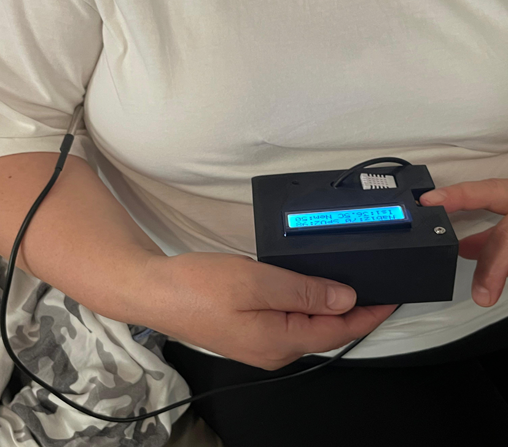

Medikal Nesnelerin İnterneti (IoMT) ile Hayati Verilerin Gerçek Zamanlı Uzaktan Takibi
Proje Özeti
Bu proje, hastaların SpO₂, nabız ve vücut sıcaklığı gibi hayati verilerinin uzaktan ve gerçek zamanlı izlenmesini amaçlayan IoT tabanlı bir sistemdir. Sensörlerden alınan veriler kablosuz olarak web arayüzüne aktarılır ve kullanıcılar tarafından anlık olarak takip edilebilir. Sistem, özellikle evde bakım, kronik hasta takibi ve temasın azaltılması gereken durumlar için pratik bir çözüm sunar.
Kullanılan Teknolojiler
- Arduino
- Pulse Oximeter Sensor
- Firebase
- HTML, CSS
Sistem Yapısı
Sensörlerden alınan veriler mikrodenetleyici üzerinden Firebase’e gönderilmiş, web arayüzünde gerçek zamanlı gösterilmiştir.